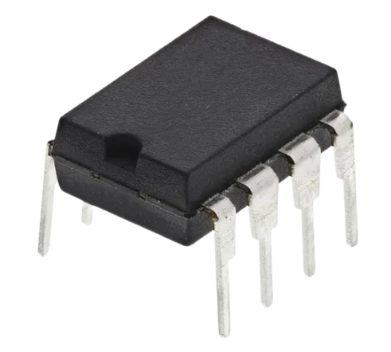
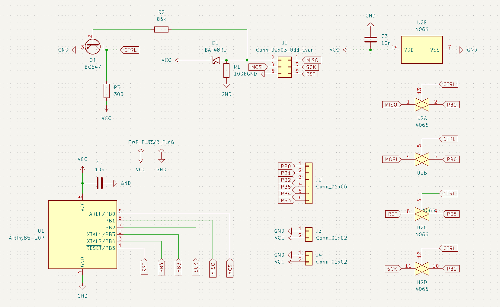
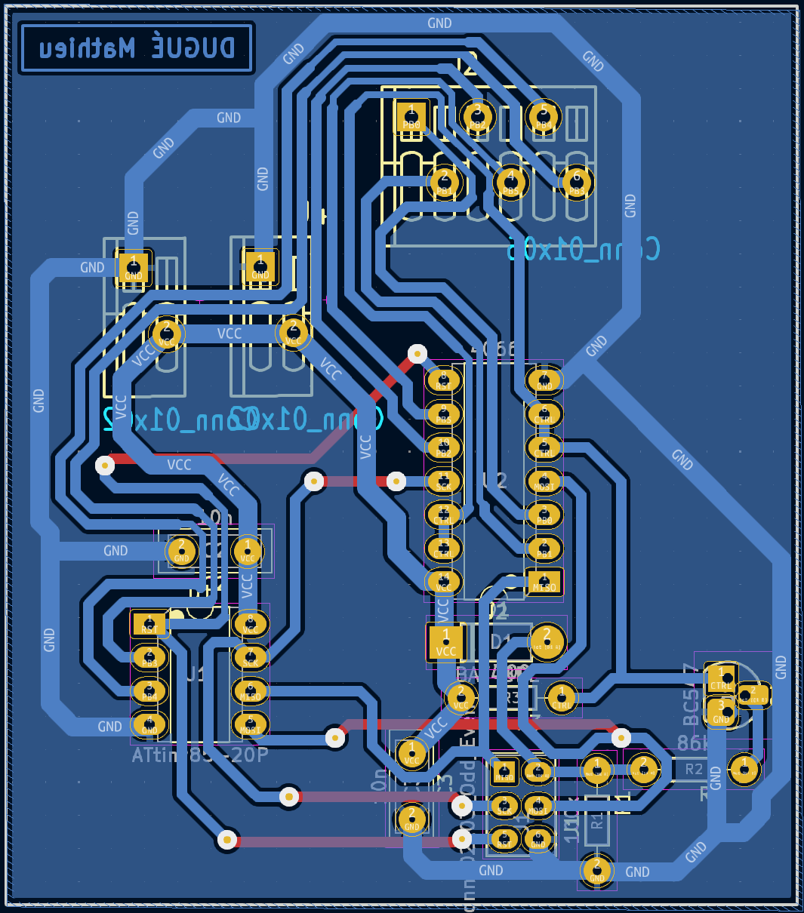
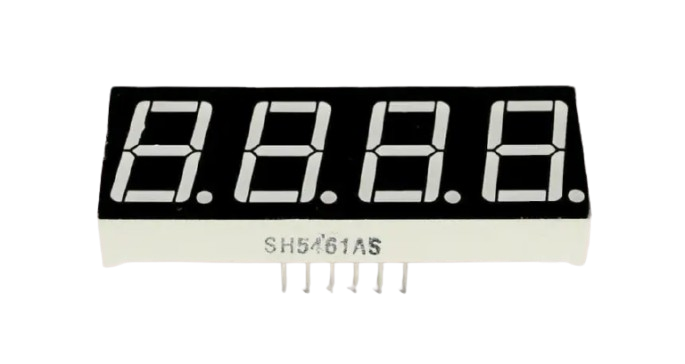
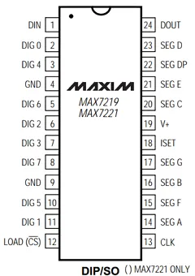
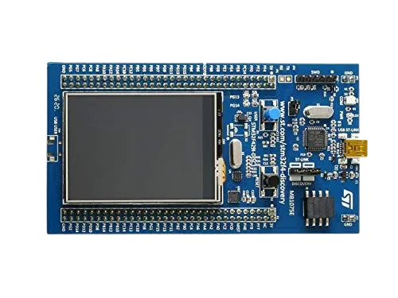
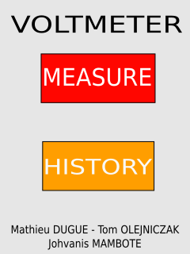
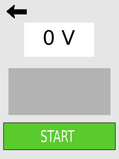

Le projet Voltmètre est un projet visant à développer les notions de conversion analogique vers numérique. Pour développer ces dernières, j’ai réalisé un voltmètre, un appareil omniprésent dans mon domaine d’étude. Ce dernier applique parfaitement les notions de conversion analogique vers numérique que l’on souhaite étudier. Afin de réaliser le voltmètre, j’ai décomposé le projet en deux grandes parties. La première était axée sur l’électronique et la réalisation d’un produit final à l’aide d’une ATtiny85. La seconde visait à réaliser un IHM en plus de l’électronique de mesure, dans l’optique d’améliorer l’expérience utilisateur de la première partie.
| Tâche à réaliser | Ressources utilisées | Traces | Autoévaluation |
|---|---|---|---|
| Etude du CAN MCP3201 et de la liaison SPI Cette étape visait à comprendre le fonctionnement du convertisseur analogique-numérique MCP3201 et sa communication via le protocole SPI. L’analyse de sa datasheet m’a permis de cerner comment il convertit une tension en donnée numérique exploitable. | Documentation : Datasheet MCP3201 |
 |
10/10
Cette première étape n’a pas été la plus compliqué du projet. J’ai déjà eu l’occasion de travailler avec du matériel similaire. De ce fait, l’étude de ce composant a était assez rapide. |
| Routage et réalisation d’un support de programmation et test de l’ATtiny Il s’agissait de concevoir un circuit imprimé permettant de programmer l’ATtiny85. J’ai effectué le routage avec KiCad, puis réalisé physiquement le support à l’aide d’une plaque de cuivre et des composants nécessaires, pour obtenir une plateforme de test fonctionnelle. |
Logiciel : Kicad
Matériels : Plaque de cuivre, divers composants, etc |
  |
10/10
Ce PCB a été un défi pour moi. Je souhaiter réaliser ma propre carte de développement à l’aide d’une ATtiny85 ce qui a était une réussite |
| Prise en main et programmation de l’ATTiny L’ATtiny85 étant un microcontrôleur que je ne connaissais que de nom, j’ai appris à le programmer à l’aide de CodeVision AVR. J’ai utilisé des LED pour faire mes premiers tests. J’ai dû comprendre comment manipuler les registres et utiliser des masques. |
Logiciel : CodeVision AVR
Matériels : ATtiny85, LED |
../10
L’ATtiny85 m’étais connu que de nom. La prise en main de ce dernier n’a pas été facile car c’est une nouvelle façon de coder pour moi : Utilisation des masques et des registres |
|
| Mise en place d’un protocole SPI entre l’ATtiny85 et les périphériques
Le but ici était d’établir une communication fiable entre l’ATtiny85, le MCP3201 et d'autres composants via le protocole SPI. Une fois les mécanismes bien compris, la configuration du protocole s’est faite sans difficulté majeure. | Pédagogique : Cours d’électronique numérique
Logiciel : CodeVision AVR Matériels : ATtiny85, MCP3201, LED |
10/10
Après avoir compris le fonctionnement du contrôleur, crée des protocoles de communication ne m’a pas posé de problème particulier. |
|
| Mesure de la tension à l’aide d’un MCP3201
Cette tâche consistait à exploiter les données fournies par le MCP3201 pour en déduire une tension réelle. J’ai dû interpréter les signaux numériques transmis par le CAN et adapter le traitement pour obtenir une mesure exploitable par la suite. |
Logiciel : CodeVision AVR
Matériels : ATtiny85, MCP3201, Afficheur 7 segments, MAX7219 |
8/10
Le défi de cette partie n’été pas d’envoyer les bons signaux aux bons endroits mais bien de comprendre le signal de sortie et de comprendre comment l’exploiter |
|
| Affichage de la tension à l’aide d’un afficheur 7 segments 4 digits L’objectif de cette étape était d'afficher les valeurs mesurées grâce à un afficheur 7 segments piloté par un MAX7219. Le défi principal a été de gérer la communication série avec un nombre limité de broches, tout en découvrant la logique série/ parallèle. | Matériels : ATtiny85, MCP3201, afficheur 7 segments 4 digits, MAX7219 |
  |
9/10
Cette étape est l’une des plus difficile du projet. La conversion série vers parallèle m’étais complétement inconnu. De plus, j’étais fortement limité par le nombre de pin de l’ATtiny85 donc j’ai dû réutiliser certains signaux pour pouvoir réussir à utiliser un afficheur 7 segments 4 digits. |
| Mise en place du protocole SPI à l’aide d’une STM32 Cette partie consistait à adapter le protocole SPI développé pour l’ATtiny85 vers une carte STM32. Grâce à STM32CubeMX et STM32CubeIDE, j’ai pu réutiliser les principes précédents et les appliquer rapidement dans un nouvel environnement. | Pédagogique : Cours d’informatique sur les STM32
Logiciel : STM32CubeIDE, STM32CubeMX Matériels : STM32F429 Discovery |
 |
10/10
Pour la partie STM32, j’ai voulu réutiliser le travail réalisé sur l’ATtiny85. Par conséquent, j’ai utilisé la même fonction SPI que précédemment ce qui m’a permis d’aller très vite à cette étape. |
| Création d’un IHM destiné au voltmètre L’enjeu ici était de proposer une interface utilisateur claire et fonctionnelle. Même si je n’ai pas réalisé le code, j’ai activement participé à la conception en suggérant des fonctionnalités comme la navigation entre différents menus. | Pédagogique : Cours d’informatique sur les STM32
Logiciel : Inkscape, STM32CubeIDE, STM32CubeMX Matériels : STM32F429 Discovery |
  |
10/10
L’IHM ne fut pas réalisé par moi. Cependant, j’ai aidé à la conception de ce dernier, j’ai proposé diverses fonctions qui fut gardé comme le fait d’avoir plusieurs menus et de pouvoir naviguer entre eux. |
| Traitement des données à l’aide de la STM32 Cette étape m’a permis de traiter les données issues du MCP3201 à l’aide de la STM32. En reprenant la logique développée sur l’ATtiny85, j’ai pu rapidement adapter le traitement des valeurs pour les intégrer dans l’interface. |
Logiciel : STM32CubeIDE, STM32CubeMX
Matériels : STM32F429 Discovery, MCP3201 |
10/10
Cette étape n’était pas très compliquée, j’ai pu réutiliser la même logique que l’ATtiny85 ce qui m’a permis de réussir assez vite. |
|
| Affichage de la tension sur l’IHM J’ai intégré le traitement des données dans l’IHM pour qu’elle affiche directement la valeur mesurée. |
Logiciel : STM32CubeIDE, STM32CubeMX
Matériels : STM32F429 Discovery, MCP3201 |
9/10
Mis à part quelque problèmes non vitaux pour le voltmètre, l’affichage de la mesure n’a pas posé beaucoup de problème |
|
| Ajout des fonctions annexes : Mode sauvegarde & historique Cette dernière phase avait pour but d’enrichir l’IHM en y ajoutant des fonctionnalités complémentaires, comme un mode de sauvegarde des mesures et un historique. Faute de temps, seule la fonction de sauvegarde a été finalisée. |
Logiciel : STM32CubeIDE, STM32CubeMX
Matériels : STM32F429 Discovery, MCP3201 |
7/10
Cette étape est la dernière réalisée. Malheureusement, nous n’avons pas réussi à réaliser toutes les fonctions souhaitées, nous avons réussi seulement la sauvegarde des données. |
|
| ANALYSE PERSONNELLE | |||
| Au-delà l’aspect technique de cette SAE, j’ai pris ce projet comme un défi pour moi. Étant responsable du groupe, mon objectif premier était de pouvoir exploiter le meilleur des compétences des personnes de mon groupe. Il m’a fallu faire preuve d’objectivité et d’analyse afin que chaque membre du groupe puisse s’épanouir au maximum tout en apprenant. Je pense que c’est une réussite dans l’ensemble même si beaucoup de progrès sont à faire pour pouvoir réussir mon objectif. D’un point de vue technique, la SAE Voltmètre était un projet que j’ai apprécié réaliser. J’ai réussi à me surpasser en apprenant beaucoup de nouvelles notions en plus de celle attendue. J’ai réussi à créer un produit fini (en électronique) ce qui me satisfait énormément.tbody> | |||
{kind=link}